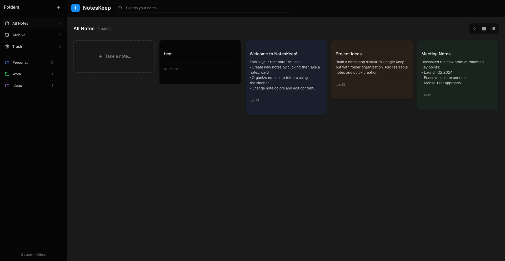

Bienvenido a "Keep Me Notes", tu aplicacion para tomar notas rapidas. Esta aplicación web te permitirá crear, gestionar y organizar tus notas personales de forma sencilla y eficiente. Podrás añadir nuevas notas, editarlas cuando lo necesites y eliminarlas una vez que ya no sean relevantes. Este es el punto de partida para construir una herramienta poderosa para tu día a día.
El sistema está diseñado para organizar la información en dos estructuras principales: Notas y Carpetas. Cada Nota es el elemento individual que guarda el contenido, y se compone de un título, una fecha, y el cuerpo o texto principal. Para mantener todo ordenado, cada una de estas notas pertenece a una Carpeta específica, la cual funciona como un contenedor que agrupa una colección de múltiples notas relacionadas.
La información que se va a almacenar se estructura de la siguiente manera:
Las Carpetas son contenedores que agrupan múltiples notas relacionadas. Cada Carpeta puede contener: